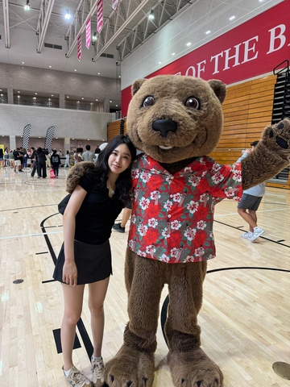

基本信息
1-page Resume (Encouraged，PDF格式，中英文均可)
Portfolio or Additional Files (Optional，PDF或视频)
请把文件名命为：first name_Last name_netid
请上传一张自己的照片，普通的生活照就可以！（只是为了面试的时候我们可以把你认出来）

查看原图
查看原图
通用问题部分
为什么想要加入CSSA？
我想加入CSSA因为我很享受组织活动的过程，也很喜欢在这个过程中互相支持团队的每个人。过去我在学生会和模拟联合国会议筹备中积累了很多举办活动的经验。每一个活动的成果都让我体会到了成就感，但也同时交到了许多志同道合的朋友，许多能互相支持，互相能向对方学习的朋友。
你心目中CSSA是个什么样的组织？
在我心目中，CSSA是一个很温暖，友好的组织。它能给予大家一种无法替代的归宿感，能传递一种温馨欢迎的氛围，也能陪伴和帮助我们成长。它能让身处海外的中国学生感受如同在“家”般的感觉。同时CSSA也举办较大的节日庆典和组织轻松有趣的比赛和团建。CSSA不仅尊重传统文化也注重欢乐和团结。
加入CSSA之后，你最想在康奈尔校园内实现的事情是什么？
策划有创意和意义的活动（大型庆典或小型娱乐活动），加强与其他社团的合作，和结交到好朋友。
内联部
第一志愿为什么选择这个部门？
这个部门是我的第一志愿因为我在高中积累了很丰富的活动策划的经验。在高中，从1300+人的学生会活动和1200+人的模拟联合国会议到义工组织的小型筹款活动，我都有参与构思，策划，和执行。在CSSA，我希望我能用我的经验为内联部作出贡献。
财务部
第二志愿为什么选择这个部门？
我选择财务部作为我的第二志愿因为这是一个很好的学习新技能的机会。我能提上自己的表格处理能力比如说用Excel或者Google Sheets。这些技能不仅能在未来职业中很实用，也能为组织贡献一份力。同时，我也很欣赏CSSA内大家互相帮助，共同成长的环境。所以我希望我能在这个温馨的环境内不断锻炼和成长。
是否接受部门调剂？
是